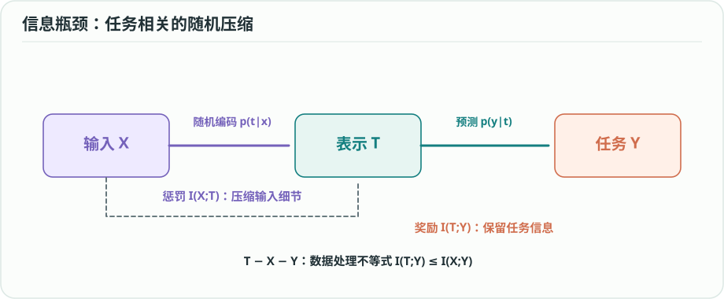
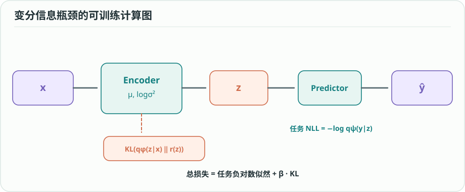
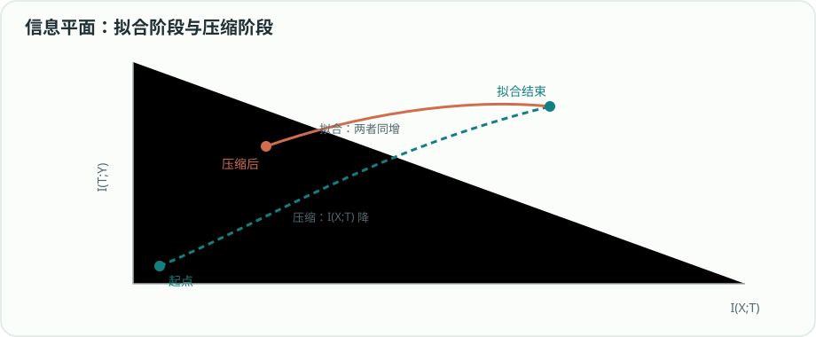

表示应该保留什么信息？
输入 X 往往包含远多于任务所需的细节。图像分类器看到像素、光照、背景、拍摄设备与物体；预测标签 Y 时，并非所有像素差异都同样有用。信息瓶颈（Information Bottleneck, IB）把这个问题形式化为：寻找表示 T，让它尽量少记住 X 的细节，同时尽量保留关于 Y 的信息。
经典 IB 假设编码器只通过 X 获得关于 Y 的信息，形成 Markov 链 T←X→Y（等价写作 T−X−Y）。因此，T 是从 X 产生的随机表示，而不是凭空观察 Y。数据处理不等式给出 I(T;Y)≤I(X;Y)：表示不可能创造原始输入中不存在的任务信息。

IB 目标：压缩与相关性之间的权衡
IB 的约束形式是：在保留至少 I₀ bit 的任务信息时，尽量压缩输入表示。使用拉格朗日乘子 β，可写成：
第一项惩罚 T 携带太多关于 X 的信息；第二项奖励 T 保留关于 Y 的信息。β 越大，任务相关性越受重视，压缩约束相对越弱；文献中也常见把 β 放在压缩项前的相反参数化，阅读公式时必须先确认约定。
IB 不是单一神经网络层或某个固定架构，而是关于随机编码分布 p(t|x) 的优化原则。离散变量可直接计算互信息；连续高维变量通常需要额外分布假设、变分界或数值估计。
候选点是明确标注的教学示意前沿，不是某个真实网络训练轨迹。目标为最小化 I(X;T)−βI(T;Y)。
IB 是一种任务驱动的率失真
率失真理论为源 X 指定失真函数 d(x,t)，在平均失真约束下寻找最小编码率。IB 可以选择一个由任务 Y 定义的失真：若满足 T−X−Y，令 d(x,t)=D_KL(p(y|x)‖p(y|t))，则期望失真等于原始输入与表示之间丢失的任务互信息：
这说明 IB 的“失真”不是像素均方误差，而是预测分布发生了多大变化。两个输入即使像素差异很大，只要它们诱导相近的 p(y|x)，在这个任务失真下也可能很接近。换一个任务标签 Y，最优表示也会改变。
变分信息瓶颈如何变成可训练目标
直接计算 I(X;T) 和 I(T;Y) 通常很困难。VIB 使用随机编码器 qφ(t|x)、预测分布 qψ(y|t) 和易处理的先验 r(t)。由于边缘分布与先验之间的 KL 非负，有：
用预测器的条件对数似然替代任务信息项，可以得到可优化的任务损失加压缩正则。常见实现最小化 E[−log qψ(y|t)] + β E[KL(qφ(t|x)‖r(t))]。这里 β 是 KL 正则权重；它与上面经典目标的 β 互为尺度变换，不应直接用同一数值解释。

VIB 的有效性取决于先验选择、潜变量维度、β、似然模型和优化过程。它是一个有用的正则化/表示学习方法，但某个任务上的提升不能证明经典 IB 解释了所有神经网络训练。
信息平面：有用的图，还是普遍定律？
信息平面把每一层 T 的 I(X;T) 放在横轴，把 I(T;Y) 放在纵轴。Tishby 与 Zaslavsky 提出用这两个互信息量分析深度网络的表示与任务信息，并讨论拟合与压缩阶段。这个图的价值在于提出了可检验的问题：训练是否会在保持任务信息的同时减少输入细节？

Saxe 等人的后续分析指出，观察到的压缩现象并非普遍规律，且与激活函数、有限精度和互信息估计方法有关。对离散输入或随机编码器，互信息可能有限；对连续输入与确定性连续映射，I(X;T) 可能发散或需要通过量化/噪声定义。若用 binning 得到有限值，那个值也依赖 bin 宽和样本量。
确定性表示与互信息估计陷阱
若 X 是连续随机变量、T=f(X) 是确定性连续表示，在一般非退化条件下，联合分布集中在低维流形上，微分熵形式的互信息可能为无穷大。若加入高斯噪声、量化或随机编码器，得到的是另一个明确定义的随机变量和另一个互信息问题。比较不同网络时，必须固定噪声尺度、量化精度和估计器。
因此，信息平面不是无需条件就能读取的“神经网络内部仪表盘”。它更适合作为研究假设与测量协议：定义随机变量，明确离散/连续表示，验证估计偏差，再把观察到的趋势与泛化、校准和任务误差独立比较。
把 IB 用作原则，而不是万能解释
- IB 关注任务相关的压缩：少保留 X 的信息，多保留与 Y 有关的信息。
- β 的位置决定参数意义；经典 IB 与 VIB 常用不同的权重约定。
- VIB 把难算的互信息替换成可训练的变分上界与预测似然。
- 连续确定性表示的互信息可能发散；binning 结果必须报告分辨率。
- 信息平面是分析工具，不是普遍成立的深度学习定律。
来源与延伸阅读
- Tishby & Zaslavsky (2015), Deep Learning and the Information Bottleneck Principle：IB 与深度网络信息平面的原始主张。
- Saxe et al. (2019), On the Information Bottleneck Theory of Deep Learning：压缩阶段的适用条件与估计问题。
- Alemi et al. (2017), Deep Variational Information Bottleneck：变分 IB 的可训练界。
- Shannon (1959), Coding Theorems for a Discrete Source With a Fidelity Criterion：率失真理论的基础。